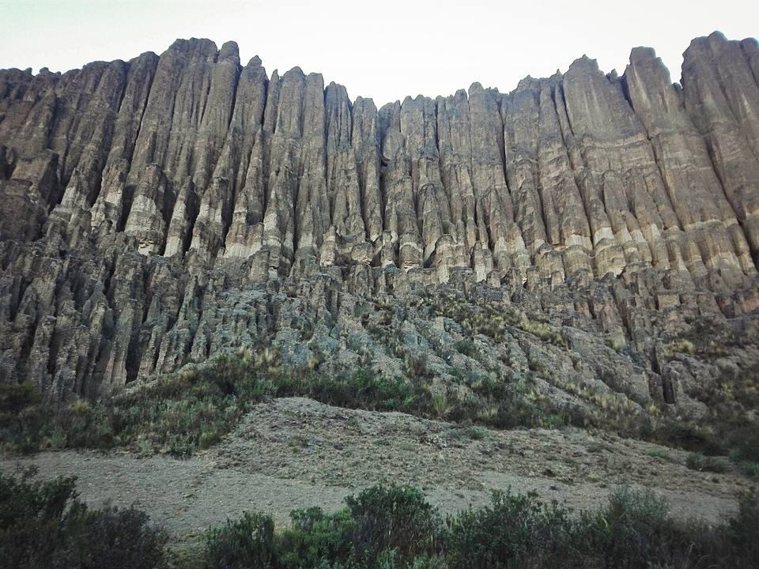
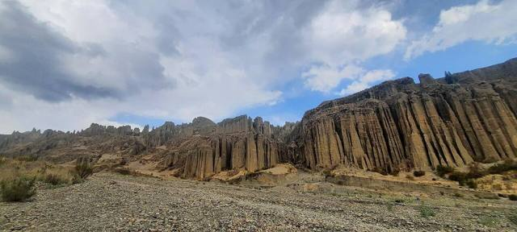
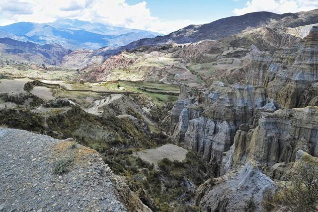
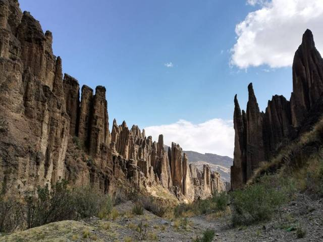

Valle de las Ánimas
Departamento de La Paz · Naturaleza y caminatas

Al este de la Zona Sur, encima de Ovejuyo, la erosión talló todo un valle de altas agujas y murallas de arcilla, que dicen habitado por las ánimas. El sendero sigue el fondo del valle entre estos órganos, con el Illimani al frente, y puede seguir hasta el cañón de Palca. Es un área protegida municipal, y una caminata de medio día a un día casi sin salir de la ciudad.
3965 maltura
0 a 1 díapara quedarse
Gran altura. Por encima de 3500 m, el mal de altura (soroche) es frecuente. Llega de a poco, toma mucha agua y ve despacio el primer día.
Qué hacer
- Caminata entre las agujas de arcilla (2 a 4 h)
- Vista al Illimani
- Seguir hasta el cañón de Palca (día completo o excursión)
Qué comer
- SalteñaLa empanada boliviana: masa algo dulce y un relleno jugoso de carne, papa y aceituna. Se come en la mañana, ¡sin derramar el jugo!
- Plato paceñoEl plato típico de La Paz: choclo, habas, papas y queso frito.
Consejo. Bus Puma Katari o minibús a Chasquipampa y Ovejuyo, y luego a pie, o excursión junto con el cañón de Palca. Casi a 4000 m y sin sombra: agua, bloqueador, sombrero, y salir temprano.
Cómo llegar a Valle de las Ánimas
La Paz Carretera (bus, auto) · 45 min a 1 h
Bus Puma Katari o minibús a Chasquipampa y Ovejuyo, y luego a pie; o excursión.
Fotos de Valle de las Ánimas





.jpg){kind=link}
Otros lugares de la región
 La PazLa sede de gobierno más alta del mundo, en una hoyada al pie del Illimani.
La PazLa sede de gobierno más alta del mundo, en una hoyada al pie del Illimani. El AltoLa gran ciudad aymara en el Altiplano, justo encima de La Paz: una feria gigante, cholets y lucha de cholitas.
El AltoLa gran ciudad aymara en el Altiplano, justo encima de La Paz: una feria gigante, cholets y lucha de cholitas. Valle de la LunaFormaciones de arcilla lunares en la zona sur de La Paz.
Valle de la LunaFormaciones de arcilla lunares en la zona sur de La Paz. ChacaltayaAntigua pista de esquí a 5400 m: la vista más alta de la Cordillera Real.
ChacaltayaAntigua pista de esquí a 5400 m: la vista más alta de la Cordillera Real. Huayna PotosíUn «seismil» conocido por ser accesible, con ascenso guiado en 2 o 3 días.
Huayna PotosíUn «seismil» conocido por ser accesible, con ascenso guiado en 2 o 3 días. Cordillera Real: CondoririLagunas glaciares y cumbres nevadas, a 2 h de La Paz.
Cordillera Real: CondoririLagunas glaciares y cumbres nevadas, a 2 h de La Paz. TiwanakuSitio preinca Patrimonio de la UNESCO: la Puerta del Sol y el templo de Kalasasaya.
TiwanakuSitio preinca Patrimonio de la UNESCO: la Puerta del Sol y el templo de Kalasasaya.- Urus de IruitoUna comunidad uru a orillas del río Desaguadero, guardiana de una cultura muy antigua del lago.
 Jesús de MachacaPueblo aymara del Altiplano y su templo de 1706, al sur del lago Titicaca.
Jesús de MachacaPueblo aymara del Altiplano y su templo de 1706, al sur del lago Titicaca. Comanche y sus Puya raimondiiUn bosque de Puya raimondii, la bromelia más grande del mundo, en el Altiplano.
Comanche y sus Puya raimondiiUn bosque de Puya raimondii, la bromelia más grande del mundo, en el Altiplano.- Aguas termales de ViscachaniBaños de agua tibia en el Altiplano, camino a Oruro, a una hora y media de La Paz.
 SorataPueblo tranquilo al pie del Illampu, base de trekkings.
SorataPueblo tranquilo al pie del Illampu, base de trekkings. Charazani y ApolobambaTierra de los kallawayas, médicos andinos (UNESCO), con aguas termales y grandes trekkings.
Charazani y ApolobambaTierra de los kallawayas, médicos andinos (UNESCO), con aguas termales y grandes trekkings. Camino de la Muerte (bici)La bajada en bicicleta más famosa del mundo: de 4650 m a 1200 m en un día.
Camino de la Muerte (bici)La bajada en bicicleta más famosa del mundo: de 4650 m a 1200 m en un día. Trekking del Choro (camino inca)Tres días por un camino prehispánico, de las nieves de La Cumbre al bosque de los Yungas.
Trekking del Choro (camino inca)Tres días por un camino prehispánico, de las nieves de La Cumbre al bosque de los Yungas. Trekking del Takesi (camino inca)Dos días por uno de los caminos incas mejor conservados de Bolivia, hasta Yanacachi.
Trekking del Takesi (camino inca)Dos días por uno de los caminos incas mejor conservados de Bolivia, hasta Yanacachi. Trekking del Yunga CruzEl más salvaje de los caminos prehispánicos hacia los Yungas: 4 a 5 días al pie del Illimani.
Trekking del Yunga CruzEl más salvaje de los caminos prehispánicos hacia los Yungas: 4 a 5 días al pie del Illimani. Coroico (Yungas)Pueblo en lo alto de los Yungas subtropicales: café, cascadas y piscinas con vista.
Coroico (Yungas)Pueblo en lo alto de los Yungas subtropicales: café, cascadas y piscinas con vista. Chulumani (Sud Yungas)Pueblo de los Sud Yungas entre café, coca y bosques de nubes, lejos de la multitud.
Chulumani (Sud Yungas)Pueblo de los Sud Yungas entre café, coca y bosques de nubes, lejos de la multitud.